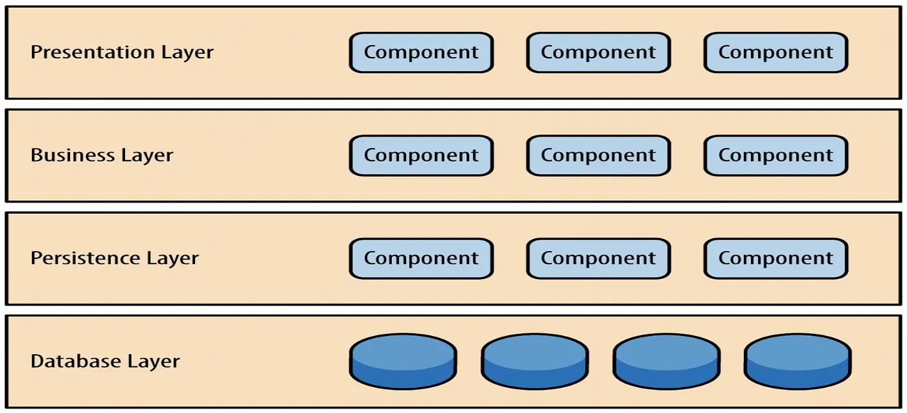
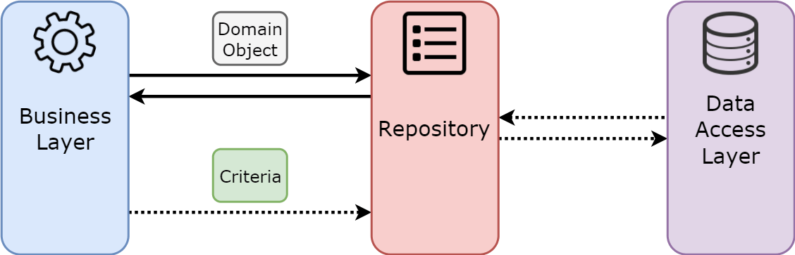

Software Architecture
Architecture & Design
What does “Architecture” make you think of?
What comes to mind when you think of “Design”?
Architecture vs Design pt.1
Architecture vs Design pt.2
There is a clear distinction between architecture and design, though many confuse the two concepts.
Architecture: The high-level structure of the entire system.
- Identifies major components needed
- Defines connections and protocols between components
- Focuses on system-wide decisions and constraints
Design: The detailed implementation of each component.
- Specifies data structures within components
- Defines interfaces and class relationships
- Addresses component-level decisions
Architecture & Design in SE
How do architecture and design fit into the software engineering process?

Level of Abstraction
In both architecture and design, we create an abstract representation of reality by:
- Ignoring insignificant details,
- Focusing on the most important properties, and
- Considering both modularity (i.e., separation of concerns) and interconnections.
What is Software Architecture?
- Software architecture defines the system’s fundamental structure, including its components and their relationships
- It bridges system design and requirements engineering, identifying key structural elements and their interfaces
- An architectural model presents the system’s organization through a network of communicating components
Historical Perspective
Early development methodologies favored a fixed (or static) architecture.
- Emphasized comprehensive upfront planning
- Viewed architectural changes as costly and risky
- Aimed to minimize alterations after initial design phase
Evolution of Architectural Thinking
- Traditional View: Architecture as a rigid structure
- Contemporary View: Architecture as an evolving framework
- Key Shift: To adaptable systems that can respond to:
- Changing business requirements
- Emerging technologies
- User feedback and market demands
Good Architecture
Key Properties of Good Architecture
- Fulfills Requirements: Ensures the system meets functional and non-functional requirements
- Manages Complexity: Organizes the system to make complexity manageable
- Facilitates Change: Provides flexibility for future modifications
- Balances Quality Attributes: Appropriately emphasizes reliability, performance, security, and other quality factors
The Role of Good Architecture
A well-designed architecture enables:
- System Understanding: Clarifies component relationships
- Component Reuse: Identifies opportunities for reusing architectural elements
- Efficient Construction: Organizes development into manageable units
- System Evolution: Maps pathways for future growth
- Project Management: Aids in tracking development progress
- Stakeholder Communication: Facilitates understanding across teams
Architectural Modularity
Architectural modularity describes how easily a system can be divided into independent components and recombined in different ways. A highly modular architecture promotes:
- Flexibility: Components can be adapted for diverse uses.
- Abstraction: Effective modularity depends on choosing appropriate abstractions for each component.
Benefits of Architectural Modularity:
- Parallel Development: Allows independent teams to work on major components simultaneously.
- Simplified Testing: Isolates components, making system-level testing more manageable.
- Improved Reuse: Enables the reuse of architectural elements in different contexts.
Principles of Architectural Modularity
To achieve a modular architecture, focus on:
Component Cohesion:
- Defined Responsibility: Each component should have a clear, single responsibility.
- Functionality Grouping: Group related functionality within component boundaries.
- Minimized Cross-Cutting Concerns: Reduce dependencies and shared responsibilities between components.
Component Coupling:
- Reduced Dependencies: Minimize dependencies between architectural components.
- Well-Defined Interfaces: Use clear interfaces for components to interact.
- Limited Knowledge: A component should know as little as possible about the implementation details of other components.
Implementing Architectural Modularity
To achieve architectural modularity in practice, focus on:
1. System Integration
The process of combining the individual architectural components into a cohesive and functional whole.
- Interface-Based Interaction: Ensure components interact solely through their defined interfaces.
- Separation of Concerns: Maintain clear separation of responsibilities during integration.
2. Architectural Boundaries:
The foundation that provides clear and distinct limits of each component within the system.
- Clear Responsibilities & Interfaces: Define what each component does and how it interacts. (Purpose and scope)
- Communication Protocols: Establish the rules for components to communicate.
- Explicit Dependencies: Make dependencies between components clear and well-defined.
3. Interface Contracts:
The implementation details with explicit agreements that define how different architectural components interact with each other.
- Specified Behaviors: Define the expected behavior of each component’s interface.
- Data Formats: Specify the data formats used for component interactions.
- Independent Evolution: Design interfaces to allow components to evolve independently.
Architectural Models
Modeling Software Architecture
- Architectural models present different views of the system
- Common views include component structure, runtime behavior, and deployment
- Complete architectural documentation requires multiple complementary views
Why Multiple Views?
- No single view captures all architectural aspects
- Different stakeholders need different perspectives
- Complementary views provide comprehensive understanding
Model Representation
Simple, informal block diagrams are commonly used for architectural representation.
Advantages:
- Enhance communication
- Support project planning
- Simple to create and understand
- Facilitate high-level discussions
Limitations:
- May not capture architectural nuances
- Can be ambiguous without documentation
- May oversimplify complex relationships
- Often lack standardization
The 4+1 View Model
The 4+1 view model presents architecture through multiple perspectives:
- Logical View: Outlines the system’s component structure
- Process View: Shows runtime process interactions
- Development View: Presents organization for implementation
- Physical View: Illustrates deployment across hardware
- Scenarios (+1): Connects all views with use cases
Models + Documentation
- Stakeholder Discussions: Architectural models provide a foundation for collaborative decision-making
- Implementation Guidance: Documentation translates architectural vision into practical implementation details
Documentation Best Practices:
- Maintain current and accessible documentation
- Focus on key architectural decisions and rationales
- Include views relevant to each stakeholder group
- Use consistent notation and terminology
Modeling Benefits
- Facilitates Communication: Serves as a foundation for stakeholder discussions
- Enables Analysis: Supports evaluation of architectural quality attributes
- Promotes Reuse: Enables application of architectural patterns across systems
Additional Benefits:
- Provides onboarding material for new team members
- Serves as reference for system maintenance and evolution
- Captures architectural decisions and rationales
- Supports impact analysis for proposed changes
Architectural Patterns
Architectural Patterns
Architectural patterns are reusable solutions to common problems in software architecture, providing structured blueprints for proven practices that organize interactions between subsystems, clarify component roles, and enhance both development efficiency and long-term maintainability.
Benefits of Using Patterns
- Leverage proven solutions
- Establish common vocabulary
- Avoid reinventing the wheel
- Facilitate knowledge transfer
- Enable systematic comparison of alternatives
Pattern Selection
- Requirements Analysis: Match patterns to functional and non-functional requirements
- Trade-off Analysis: Consider the strengths and weaknesses of each pattern
- Combination Approach: Most real-world systems use multiple patterns
- Evolution Consideration: Select patterns that can accommodate anticipated system changes
Tip
Patterns are tools, not rules. Adapt them to your specific context.
Some Architectural Patterns
Beyond the core patterns, numerous specialized patterns address particular architectural challenges.
Master-Slave: The master-slave pattern provides a clear hierarchy for task delegation and coordination.
Blackboard: The blackboard pattern offers a flexible approach for problems where multiple knowledge sources need to collaborate.
Broker: Broker patterns facilitate communication in distributed systems.
Peer-to-Peer: Peer-to-peer patterns distribute responsibility across all nodes, eliminating central points of failure.
Pipes and Filters Architecture
Pipes and Filters Pattern
- Unidirectional Data Flow: Streamlined processing from source to sink.
- Pipes: Connectors that pass data between filters.
- Filters: Components that transform data.
Pipe and Filter Benefits
- Intuitive Processing Flow: Data transforms systematically through clear steps.
- Modifiable Filters: Filters are easily changeable provided input and output contracts remain consistent.
- Reusability and Flexibility: Filters can be swapped or extended, enhancing adaptability.
- Separation of Concerns: Natural division of functionality across discrete components.
Pipe and Filter Limitations
- Data Transmission Overhead: Passing the entire data set through all components can be inefficient.
- Reliability Concerns: Potential for data loss in transit between filters.
- Performance Bottlenecks: System speed can be hampered by numerous or slow-processing filters, leading to potential bottlenecks.
Layered Architecture
Layered Architecture
Layered architecture patterns are n-tiered patterns where the components are organized in horizontal layers. This is the traditional method for designing most software and is meant to be self-contained. This means that all the components are interconnected but do not depend on each other.
- Hierarchical Organization: System functionality divided into distinct layers.
- Layer Responsibilities: Each layer has specific responsibilities (separation of concerns) and serves the layer above.
- Inter-layer Communication: Layers interact with adjacent layers only.
Typical Four-Layer Architecture
- Presentation Layer: User interface and user interaction management.
- Business Logic Layer: Core processing and business rule implementation.
- Persistence Layer: Data management and storage handling.
- Database Layer: Data storage and retrieval mechanisms.
Layered Architecture Benefits
- Enhanced Organization: Clear separation of functional areas.
- Increased Flexibility: Layers can be modified or replaced independently.
- Improved Scalability: Easier to scale layers independently to meet demand.
- Simplified Testing and Maintenance: Layers can be tested in isolation.
Layered Architecture Limitations
- Performance Overhead: Additional processing associated with layer traversal.
- Rigidity in Layer Interaction: Strict layering can limit interaction to adjacent layers only.
- Potential for Redundancy: Similar functions may be reimplemented in multiple layers.
Model-View-Controller
Model-View-Controller (MVC) Architecture
Model-View-Controller (MVC) is a pattern in software design commonly used to implement user interfaces, data, and controlling logic. It emphasizes the separation between the software’s business logic and display. This “separation of concerns” provides a better division of labor and improved maintenance.
MVC Architecture Components

- Model: The data and business rules of the application.
- View: The output representation of information.
- Controller: The interface between Model and View, processing all the business logic and incoming requests, manipulating data using the Model, and interacting with the Views to render the final output.
MVC Architecture Advantages
- Modularity: Clear division allows for independent development and testing.
- Reusability: Components can be reused across different parts of the application.
- Scalability: Easy to scale the application as complexity grows.
- Maintainable: Changes in the business logic or UI can be made with minimal impact on the other components.
MVC Architecture Limitations
- Learning Curve: Understanding the interactions between components can be challenging for new developers.
- Overhead: Can introduce additional complexity and development overhead.
- Duplication: Risk of duplication if the architecture is not strictly followed.
Repository Architecture
Repository Architecture
The Repository design pattern isolates your domain from caring about how storage is implemented, so all objects retrieved can be treated like an in-memory collection. The repository contains all the logic to get the data and map it to the domain.
Repository Architecture Components
- Client: The consumer of the repository, often a business logic component.
- Repository: Abstraction layer that centralizes data access and manipulation.
- Data Source: The underlying storage mechanism, such as a database or a file system.
Repository Architecture Advantages
- Decoupling: Separates data access from business logic, promoting loose coupling.
- Maintainability: Centralizes data logic, making the application easier to maintain.
- Reusability: Allows the business logic to reuse data access logic.
- Testability: Simplifies testing by using mock repositories or in-memory databases.
Repository Architecture Limitations
- Complexity: Can add complexity to the data access layer.
- Over-abstraction: May lead to unnecessary abstraction layers, making the data access less transparent.
- Performance Overhead: The additional abstraction layer may introduce a performance overhead.
Client-Server Architecture
Client-Server Architecture Overview

- Interaction Model: Defined by the relationship between providers (servers) and requesters (clients) of services.
- Resource Sharing: Servers provide resources or services, while clients consume them.
- Communication: Typically over a network with various protocols.
Client-Server Components
- Client: Initiates requests for services and processes the response.
- Server: Provides services, processes requests, and sends back responses.
- Network: Facilitates communication between clients and servers.
Client-Server Advantages
- Scalability: Servers can be scaled to handle an increasing number of client requests.
- Centralized Control: Servers centralize control over data and services, simplifying management and security.
- Accessibility: Clients can access services remotely, offering flexibility and mobility.
- Resource Optimization: Clients and servers can be optimized separately according to their roles.
Client-Server Limitations
- Network Dependency: Relies heavily on the network for communication, which can introduce latency.
- Resource Intensive: Servers can become overloaded if not properly scaled.
- Security Risks: Centralized servers present a single point of failure and can be targeted for attacks.
Event-Driven Architecture
Event-Driven Architecture Overview

- Reactive Systems: Built around the production, detection, and consumption of events.
- Decoupled Processes: Components react to events rather than directly invoke each other.
- Asynchronous Communication: Allows systems to be more responsive and scalable.
Event-Driven Architecture Components
- Event Producers: Generate events and send them to an event dispatcher or broker.
- Event Consumers: React to events and handle the necessary processing.
- Event Channel: Transports events from producers to consumers.
- Event Broker: (Optional) Routes events to appropriate consumers based on event type or content.
Event-Driven Architecture Advantages
- Flexibility: New event types and event consumers can be added with minimal impact on existing components.
- Scalability: Systems can handle high volumes of events and can be scaled out to meet demand.
- Responsiveness: Asynchronous processing of events leads to responsive systems that can handle varying loads efficiently.
Event-Driven Architecture Limitations
- Complexity in Tracking: Asynchronous nature makes it challenging to track the flow of events and debug issues.
- Event Storming: A large number of events can overwhelm the system, leading to event storming.
- Distributed Transactions: Managing transactions across multiple event consumers can be complex.
Microservices Architecture
Microservices Architecture Overview

- Service-Oriented: Composed of small, autonomous services.
- Decomposition: Each service implements a specific business capability.
- Independence: Services are developed, deployed, and scaled independently.
Microservices Architecture Components
- Client: The user interface or application that consumes the microservices.
- API Gateway: An entry point that routes requests to the appropriate microservices.
- Microservice: A minimal, self-contained unit that serves a single business function.
- Data Store: Independent databases for each service, preventing data entanglement.
Microservices Architecture Advantages
- Agility: Microservices can be developed and deployed rapidly and independently.
- Resilience: Service independence increases the overall system’s fault tolerance.
- Scalability: Services can be scaled horizontally to meet demand.
- Technological Diversity: Services can be implemented using different programming languages and data storage technologies.
Microservices Architecture Limitations
- Complexity: Managing a system composed of many small services can be complex.
- Network Latency: Communication between services over the network introduces latency.
- Data Consistency: Maintaining data consistency across services can be challenging.
- Operational Overhead: Requires robust operational infrastructure for monitoring, logging, and deployment.